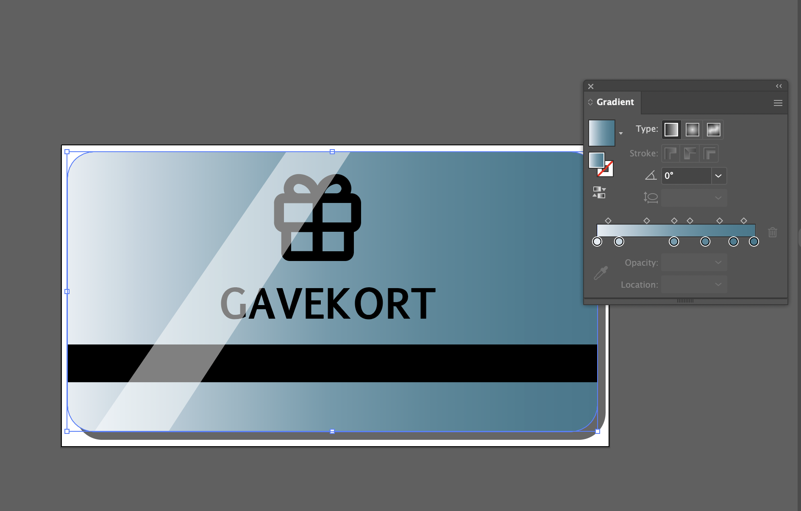
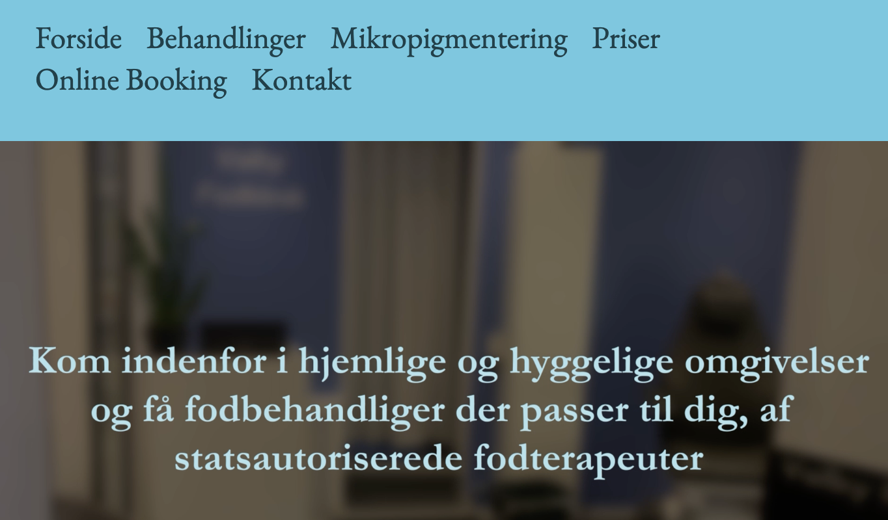
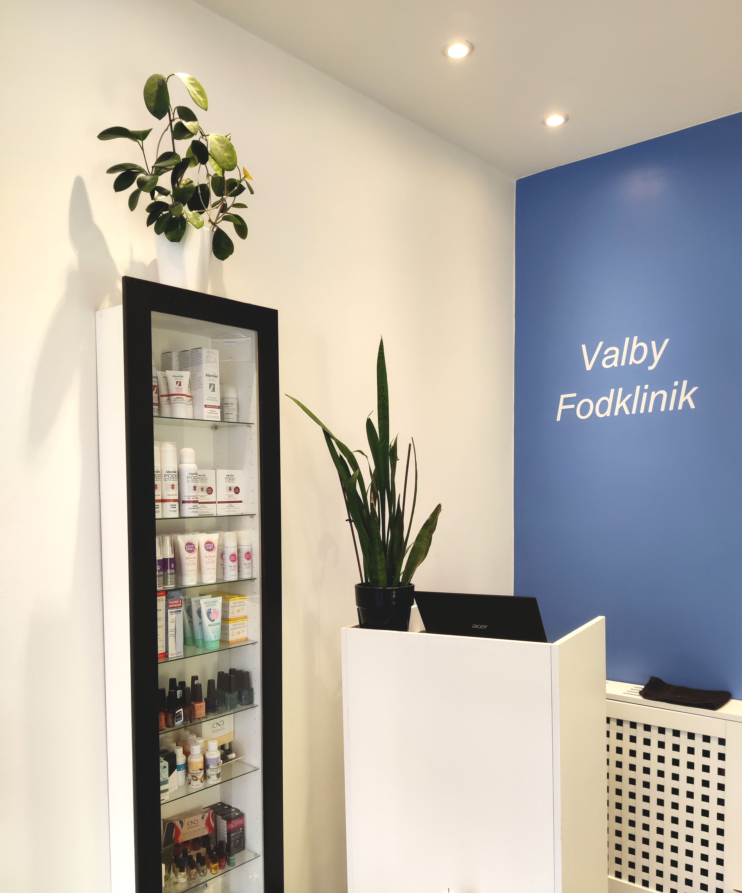

Under tema4 har jeg lært om ophavsretloven, markedsføringsloven og digitale medier som Youtube, Vimeo, Facebook, Instagram. Jeg har lært om fotostil ift billede-redigering og color-grading dertil. Desuden er jeg blevet introduceret til video-redigering. Hvor jeg har lært at framing er en stor del af video. Jeg kender til før/fugle perspektiv, forgrund, baggrund og visuelle billede fortælling. Jeg har lært om kompositioner, harmoni og dynamik og dybde med farve og tekstur. Jeg har lært om filformater som aiff, wav, mp4, mp3, jpeg, png, h-264.
Jeg har lært metoder til hvordan man kan vide om det er en brugervenlig, interaktiv og funktionel hjemmeside hja. eksperttest (heuristiktest), 5-sek test og BERT-test. Jeg har også lært om SCRUM metoden, hvor man blev inddelt i nogle roller og skulle sætte nogle mål og opgaver for sig selv og gruppen.
Jeg er blevet introduceret for 5-skuds reglen, storyboard, interview-guide ift. filmning. Derudover har jeg lært om at redesigne en hjemmeside med værktøjer som wireframe, layout-diagram og sitemap. Derudover har jeg lært mere om Netlify, git og github (github repository). Jeg fik mere viden om html, css og javascript ift. redesign af hjemmeside og om burgermenu.Jeg lærte også om gruppe-arbejde og gruppe-kontrakt.
Dette vil jeg vise med redesign opgaven, som jeg har lavet under tema5.
Under tema2 blev vi inddelt i grupper, hvor vi først skulle lave en hjemmside individuelt om en person der var passioneret omkring noget. Vi skulle indhente materiale i par, som indebar interview-guide, storyboard og filmning. (Denne opgave kan ses nederst på siden). Efter det skulle vi være i en større gruppe, hvor min gruppe skulle finde en virksomhed med en hjemmeside, som vi skulle redesigne. Vi valgte dertil tage udgangspunkti Valby fodkliniks hjemmeside.
Vi startede med at interviewe vores kunde for at få et indblik i hvad vores kunde forventede og havde af ønsker design og indholds-mæssigt.
Vi inddelte vores arbejde og planlæggelse af vores arbejde vha. metoden SCRUM, som kan ses nedenstående. Vi lavede et dokumentations powerpoint med vores fremgangsmåde til de tildelte opgaver vi hver i sær havde. Jeg har lavet en dokumentation mere uddybende for det arbejde jeg har lavet indenfor opgaven, som kan ses nedenfor.
Vi valgte at gøre hjemmesiden simpel og klinisk design-mæssigt for at demonstrere at det er indenfor et proffesionelt område som sundhedsfeltet. Dette gjorde vi ved at benytte blå toner, som symbolisere information. Vi arbejdede med en html og css side hver i sær og jeg havde fået tildelt siden om priser.
Jeg startede med at tage ud og interviewe kunden for at få en ide om, hvad hun havde af tanker og forstillinger selv.
Hertil havde jeg forberedt et moodboard med de ideer vi havde snakket om i min gruppe. Jeg viste desuden kunden noge eksempler på andre fodklinikkers hjemmesider som inspiration til kunden og for at vise nogle layouts.

Vi fik derfor en ide om hvad kunden kunne tænke sig, ud fra design mæssige anbefalinger, vi havde argumenteret for ud fra tidligere research og surveys jeg præsenterede for kunden. Jeg lavede derfra en sketch til prototypen i tegne-programmet Procreate, ud fra det moodboard og styletile nogle andre fra min gruppe havde lavet.
Ud fra min sketch begyndte jeg at designe prototypen med billede-eksempler jeg havde fundet på Unsplash. Jeg lavede den interaktiv så man kunne se hvordan man skulle forstille at navigere rundt på hjemmesiden.

Da vi havde inddelt vores indivudelle sider vi skulle arbejde med, begyndte jeg at arbejde med et mock-up og derefter et wireframe i Xd for at have en guide til hvordan jeg skulle kode min side.
Jeg arbejdede efterfølgende på hjemmesidens logo og nogle illustrationer til min side, for at give det et bedre visuelt layout. Jeg lavede begge svg-illustrationer i illustrator, hvor jeg særligt benyttede gradient og 3d effekt ved at jeg nogle lysningspunkter.
Efter nogle andre gruppe-medlemmer havde taget billeder af behandlinger og profukter nede i klinikken redigerede jeg billederne i Photoshop.
Jeg arbejdede særligt med lyset og undertonerne i billederne. Dette gjorde jeg særligt med brightness/contrast, saturation og sharpen. Jeg udklippede desuden også elementer der ikke så godt ud fx i baggrunden.
Nedenstående kan man se de redigerede billeder før/efter. (Redigerede først og billede ved siden af u-redigeret.)
Undervejs i kodnings-processen efter umiddelbart at skulle have alt indholds-materiale fandt vi ud af vi manglede mere billede og video-materiale. Så jeg tog ned og tog nogle flere billeder, filmede og tog portræt-billeder, som jeg senere redigerede i Photoshop igen.
Jeg implimenterede derefter billederne i mapper til koden.
Da vi var færdige med redesign siden, lavede jeg en powerpoint, hvor jeg tog udgangspunkt i metoden NABC præsentations-teknikken. Derfor lagde jeg fokus på at hvad vi skulle fremlægge blev delt op i hvad, hvordan, fordele og til sidst sammenligning med konkurenter i omegn.
Nedenstående kan fremlæggelsen ses
Grundet sygdom og personlige sager i gruppen var der nogle der ikke fik lavet deres sider helt færdigt, hvilket kan ses på vores endelige produkt, da der er nogle mangler og visuelt haltende elementer ift layoutet. Dette kunne have været blevet forbedret hvis der havde været implimenteret noget mere grid på nogle af siderne.
Vi havde nogle frustrationer ift. at menuen ikke var ensartet på alle sider og vi kunne ike definere hvad probelemet var, eftersom alle siderne havde samme css definition.
Vi havde ikke fået nok svar til vores BERT-test, så det var svært at udvinde en relevant information vi kunne bruge. Hvis jeg skulle sige hvad vi kunne gøre bedre ift det, skulle BERT-testen ikke have været så specifik rettet mod en bestemt gruppe (folk der går til fodterapi). Den skulle have været mere bred, så flere kunne svare.
Ift. min side kunne jeg have lavet et mere brugervenligt layout, hvor priserne var inddelt mere så det ville være nemmere at finde den behandling og pris dertil. Jeg kunne have inddelt priserne i grid så det ikke stod i en "lang køre". Jeg kunne desuden og nemmere have kodet tekst-indholdet, hvis jeg havde brugt tabel istedet for mange div'er. Dette fandt jeg først ud af senere.
Vi fik ummidelbart at vide de samme ting, som er nævnt ovenstående. Endvidere fik vi at vide at man skal passe på med at lave gradient på et logo, da det for firmaet ikke kan printes altid i gradient. Vi fik af vide at vores link skulle være mere brugervenlige ved at tydliggøre dem evt. med stærkere farve. Gavekortet på pris-siden var godt, og dertil at der med store bogstaver stod gavekort, så man ikke var i tvivl om hvad der tilbydes.